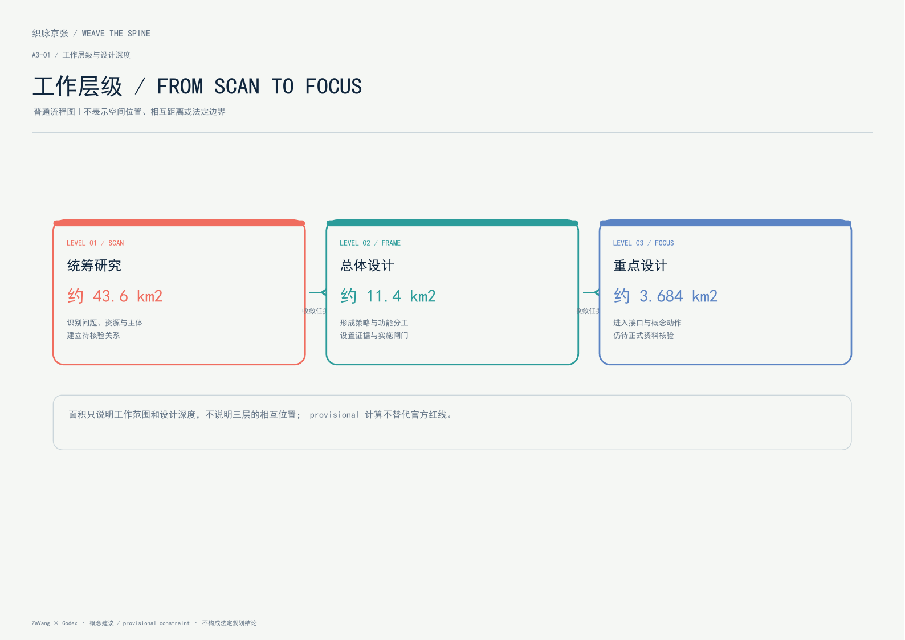
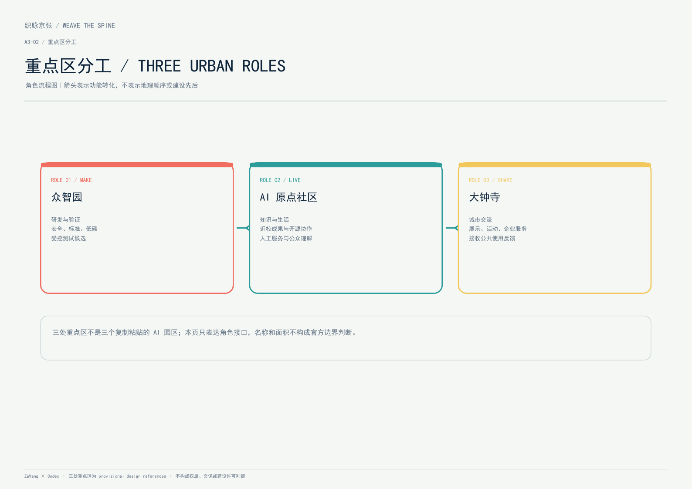
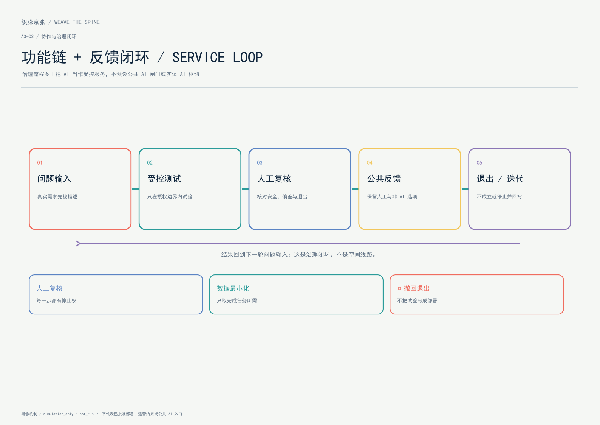
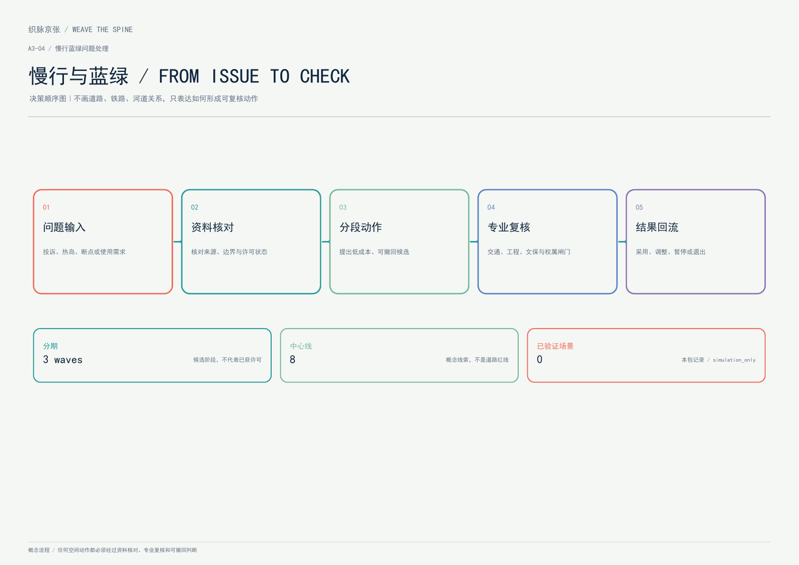
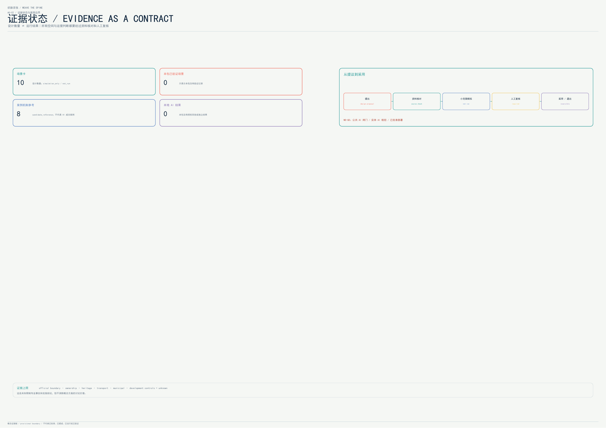

织脉京张：面向可验证创新的AI城市共生带
以京张智脉为公共空间主轴，连接全栈自主创新、开源社区、产业测试、人才生活和长期治理，形成可替换、可复算、可讨论的AI城市设计初版。
织脉京张：面向可验证创新的AI城市共生带
> 本方案是 ZaVang × Codex 的初版开放共创建议。它面向 AI agent open call 生成，所有空间动作均为“概念建议、参考方案或可供专业团队深化研究”，不替代正式规划、法定审批、工程设计或政府审定结论。
设计依据与资料清单
1. 资料边界与生成方法
本方案以仓库提供的项目 site package 为主控资料层，读取了 design_brief.json、agent_taskbook.json、allowed_design_space.json、sources.json、enums/、ranges/planning_limits.json、standards/、schemas/、data/source_registry.json 与 data/processed/agent_fact_pack.md。[source:SITE-PACKAGE] [source:SOURCE-REGISTRY] [source:PROCESSED-FACT-PACK]
可作为 formal 任务依据的内容包括：项目名称、海淀区位置、三层范围的公告面积与文字四至、公告 1.3/1.4/1.5 设计任务、面向智能体任务书的六项任务和共创边界、城市设计/控规/用地分类的原则性标准。[source:OFFICIAL-ANNOUNCEMENT] [source:AGENT-TASKBOOK] [standard:PROJECT-OFFICIAL-ANNOUNCEMENT] [standard:PROJECT-AGENT-OPEN-CALL-TASKBOOK]
当前公开 site package 没有官方精确总体红线、三处重点区 polygon、道路红线、地块权属、控规强度、建筑高度、文保控制线、市政管线、交通断面与实施边界。因此本初版采用仓库维护者提供的临时粗略 polygon：[data:geometry/site_boundary.geojson#SITE-001]、[data:geometry/key_areas.geojson#PROV-KEY-001]、[data:geometry/key_areas.geojson#PROV-KEY-002]、[data:geometry/key_areas.geojson#PROV-KEY-003]。[source:BOUNDARY-SOURCE] [source:KEY-AREA-SOURCE]
临时 polygon 只用于生成、展示、拓扑检查和本轮内容讨论，不能被称为官方红线，不能支撑精确面积、审批、权属、拆改结论或工程可行性判断。官方几何到位后，需要由同一生成流程重新计算 site boundary、key areas、用地、建筑、道路、绿地、公共空间、分期和所有派生指标。[depth:existing_conditions_diagnosis] [depth:three_level_scope_framework]
2. 方案判断的证据规则
本方案把证据分为四层：
1. **任务事实**：来自公告与面向智能体任务书，只用于回答任务目标与设计深度，不制造地块级事实。[source:OFFICIAL-ANNOUNCEMENT] [source:AGENT-TASKBOOK] 2. **空间结构**：由 GeoJSON 表达，geometry/*.geojson 是空间判断的权威层；图纸和 HTML 只负责让人读懂。[data:geometry/land_use.geojson#LU-001] [data:geometry/buildings.geojson#BLDG-001] 3. **可复算指标**：由 GeoJSON 在 EPSG:4548 下复算；官方文字面积与 provisional 空间面积分开呈现。[metric:site_area_sqm] [metric:overall_design_area_announced_sqm] 4. **概念假设与风险**：对缺资料、运营、隐私、版权和实施依赖明确降级，不以“看起来确定”替代证据。[standard:MOHURD-CONTROL-DETAILED-PLANNING] [depth:risk_missing_data]
本包中的 5 张核心图、report/proposal.html、A3 文册、A0 展板与离线 visual/index.html 均由这套 GeoJSON、矩阵、指标与自检状态派生。核心图不是 raw GIS 截图，而是围绕空间意图、三核回路、蓝绿慢行、公共节点与证据链重新编排的设计图。

三层范围工作框架
1. 三层职责
| 范围层级 | 公告面积 | 本方案的工作问题 | 初版成果 | | --- | ---: | --- | --- | | 统筹研究范围 | 43.6 km² | 如何让高校、产业、资本、人才、算力、数据、场景和公共利益形成创新生态？ | 三大定位、五大功能、三区两翼回路、生态案例与长期运营机制 | | 总体设计范围 | 11.4 km² | 如何把产业战略转译为城市更新、交通市政、蓝绿空间和城市风貌？ | 京张智脉、用地服务网、慢行/接驳网络、更新项目和三期行动 | | 重点区域范围 | 368.4 ha | 三处重点区如何各自承担生态、测试、公共生活与国际交往功能？ | 众智园、AI原点、大钟寺三核详细设计建议 |
公告给出了三层范围的名称、约面积与文字四至，但精确 polygon 仍待正式附件；因此本包的 11.413 km² 空间复算值只用于自检和设计讨论，不替代公告 11.4 km² 的正式文字值。[metric:coordinated_research_area_sqm] [metric:overall_design_area_announced_sqm] [metric:key_detailed_design_area_announced_sqm]
2. 三层互相传导
统筹研究范围确定“创新生态要解决什么问题”；总体设计范围把创新链落到公共空间、功能和设施；重点区域用三个不同的空间原型验证“创新如何被使用”。三层不是三套互不相干的图，而是“战略—空间—场景—运营—复核”的一条链。[depth:overall_spatial_structure]

统筹研究范围产业与未来城市研究
1. 总体概念：京张智脉 / Jing-Zhang Civic AI Spine
“织脉京张”不是新增红线，而是一种空间和运营组织法：以京张铁路历史记忆作为时间轴，以公园、绿道、公共节点和慢行接驳组成公共空间主轴，以三处重点片区作为创新锚点，以场景卡和开放运营把产业能力还给日常生活。
三大定位沿同一条主轴叠合：
- **百年京张文化带**：保存铁路记忆的空间线索，把工程、通达、协作与城市现代化作为文化叙事的底层逻辑。
- **都市AI生活体验带**：让居民、师生、开发者、访客和企业员工共同使用公共空间、生活服务与慢行网络，而不是只在园区内部发生创新。
- **AI融合创新带**：把模型、数据、算力、终端、治理、资本、人才和场景转译为可预约、可测试、可解释的城市服务节点。
五大功能形成一个循环，而非五个孤岛：AI全栈自主创新体系 → 世界级AI创新生态 → AI+场景赋能新范式 → 智能化AI活力城市 → AI治理全球话语权，再由公共评价、开源贡献和人类复核反馈到下一轮创新。[source:AGENT-TASKBOOK]
2. 三区两翼协同回路
| 空间单元 | 角色 | 初版空间动作 | 运营连接 | | --- | --- | --- | --- | | 众智园 AI 自主创新加速区 | 全栈自主、标准、安全、低碳创新 | 绿色测试场、标准工作坊、算力服务点、清河公共界面 | 产业测试、治理展示、开发者日 | | 北京 AI 原点社区 | 世界级生态、近校转化、人才生活 | 开源发布厅、成果转化街、人才服务与生活单元 | 开源社区、近校孵化、国际交流 | | 大钟寺 AI 产业聚集区 | 智能原生新业态、城市消费、国际交往 | 轨道接驳客厅、路演/展示节点、数据要素会客厅 | 企业服务、终端体验、国际传播 | | 中关村科技服务翼 | 全球要素配置、资本、知识产权、企业服务 | 以服务接口而非新增地块表达 | 企业落地、人才连接、投融资咨询 | | 小月河场景赋能翼 | 场景试验、公共体验、蓝绿生活 | 把水系线索、绿地、慢行和公共节点织成体验线路 | 场景开放日、居民参与、公共评价 |
3. 命名与视觉识别方向
主名称为“织脉京张”，英文为 **WEAVE THE SPINE**。Logo 方向是两条不闭合的“轨道线”在中段形成一枚可继续延展的结点：一条代表百年京张的时间线，一条代表开放 AI 的协作线；交汇处不是具体企业标识，而是一个可替换的公共贡献节点。建议主色为深墨蓝（历史与制度）、京张珊瑚红（公共事件与人类尺度）、脉络青绿（蓝绿与低碳）、开放黄（实验与学习）。
视觉系统分三层：一带总标识负责“织脉京张”；三核使用不同的节点色与动词（加速、原点、路演）；场景卡使用编号、数据边界、人工复核和开放许可四个固定角标。所有字体、图标、企业名称和历史图像在正式制作时必须逐项清权，不直接复制任何第三方 Logo。[source:AGENT-TASKBOOK]
4. 八个具名机制对照案例（不是八个 AI 成功案例）
以下 8 个案例是 agent.2 要求的核心候选，统一按“问题 → 工具 → 交互 → 结果/反证 → 迁移边界”记录。它们是 candidate_reference，不是海淀现状、企业名录、招商承诺、 已验证 AI 结果或建设依据；本地已验证案例数为 0，AI 运行结果数为 0。[metric:case_design_count] [source:AGENT-TASKBOOK] [source:CASE-EVIDENCE-PACK] [source:CASE-EVIDENCE-AUDIT]
| ID / 具名案例 | 类型与 AI 边界 | 可迁移机制 | 结果/反证 | 对京张的限制 | | --- | --- | --- | --- | --- | | CASE-01 22@Barcelona | 创新生态机制；非 AI 原生 | 土地/基础设施/混合用途/桥接组织协同 | 企业与就业增长有官方评估，但转型未完成、住房/绿地/设施存在落差 | 不复制土地制度、资本条件或产业结果；[source:CASE-SRC-01] | | CASE-04 One-North | 创新生态机制；AI/数字试点为后置叠加 | 长期协调者、work–live–play–learn、LaunchPad、受监管测试床 | 入驻/企业数量多为机构自报；缺少 AI 产业因果和反事实 | 不把新加坡制度、密度、人才政策和 AI 试点外推到海淀；[source:CASE-SRC-04] | | CASE-05 Kendall Square | 大学—城市—企业接口；整体非 AI 区 | MIT—企业—住房—公共空间—交通的规划交换 | 就业和企业集聚与可负担性、可达性、公共空间问题并存；AI hub 是后续项目 | 不把局部 AI hub 写成整个区域的 AI 结果；[source:CASE-SRC-05] | | CASE-06 Cortex | 锚点机构创新生态；AI 特异性低 | 非营利 master developer、锚点、创业支持、混合空间 | 就业/产出含模型估算，官方统计存在口径差异；包容性需持续审计 | 不把 modeled impact 当因果，也不推出实体枢纽必然有效；[source:CASE-SRC-06] | | CASE-07 Smart Kalasatama | smart-city living lab；仅有有限 AI 子试点 | Urban Lab、居民—企业—研究者共创、小规模试点、评估和退出 | 25 个试点是项目方总结；缺少 AI 长期部署、绩效和规模化证据 | 只转译试点治理，不写成 AI 产业区或公共 AI 部署；[source:CASE-SRC-07] | | CASE-08 Toronto Quayside | 数字城市治理反例；无实现 AI 结果 | 把土地、资本、审批、数据权利、公共授权和退出条件分开审查 | 2020 年未按原方案实施；经济/财务不确定性与多重未闭合条件并存，不能确认单一直接原因 | 只能作为失败闸门，不写成功模板或单因果退出故事；[source:CASE-SRC-08] | | CASE-09 Knowledge Quarter London | AI 邻近知识网络；不是单一开发项目 | 跨机构研究—文化—企业网络、知识转化接口 | 官方审计含 ML/AI 方向，但无独立空间—AI 因果结果 | 不把网络写成已确认伙伴、单一园区或海淀现状；[source:CASE-SRC-09] | | CASE-10 Punggol Digital District | 数字/AI 赋能城区候选；规划和能力证据强于结果证据 | SIT—JTC—社区、ODP、数字基础设施、AI/机器人、living lab | 50 ha、就业/学生数等是规划或官方项目口径，非独立验证 AI 结果 | 不复制 ODP、SIT、JTC、密度和计划指标；先验证本地问题方、数据和评测；[source:CASE-SRC-10] |
**空间先例附录（不计入 8 个 AI 核心候选）：**
CASE-02 King’s Cross Central：铁路遗产、公共空间、适应性再利用和长期分期，参考公共骨架优先，不证明 AI 需要共址；[source:CASE-SRC-02]CASE-03 Euralille：交通接口、复合功能和公共—私人实施机构，参考站城关系提问方式，不证明 AI 产业结果；[source:CASE-SRC-03]
案例统一采用“项目方口径 / 规划目标 / 试点记录 / 独立评估 / 未知”区分；不使用“全球成功 AI 案例”“证明”“必然导致”“已形成 AI 生态”等未经独立因果证据支持的表述。[source:CASE-EVIDENCE-AUDIT]
这些机制共同支持土地、空间、产业、资金、人才、算力、数据和场景的“接口化”协同：不预设确定投资人、不编造企业名单、不把政策或资金写成承诺，而是通过可预约空间、公开规则和分期试验让专业团队有条件地深化。[standard:MOHURD-URBAN-DESIGN-MEASURES]
总体设计范围城市更新与控规深度城市设计
1. 空间结构：一脉、三核、多点、两翼
“一脉”是京张智脉南北公共空间主轴；“三核”是三个重点片区；“多点”是公共服务、产业测试、开源发布、生活服务、文化叙事和国际交往节点；“两翼”是中关村科技服务翼与小月河场景赋能翼。道路与公共空间图层以同一 site boundary 为约束生成：[data:geometry/roads.geojson#ROAD-001] [data:geometry/public_space.geojson#PUBLIC-001] [data:geometry/green_space.geojson#GREEN-001]
空间结构的第一判断不是增加一条大路，而是降低“科研—企业—居民—公园”之间的切换成本：用连续的慢行与蓝绿空间承载日常移动，用节点化服务承载产业测试，用文化叙事承载城市识别。涉及上跨、下穿、桥隧、地下空间、轨道接口和工程线位的内容均只是概念方向，需交通、市政、文保和安全专业确认。
2. 用地服务网
初版用地分区由 site boundary 与共享切线一次生成，五类用地完整覆盖、不重叠：[data:geometry/land_use.geojson#LU-001]。研发/科研、产业服务、蓝绿公共骨架、文化展示和社区服务不是孤立分区，而是沿京张智脉按服务关系排列。
这里的土地分类使用仓库提供的 land_use_code 语义，并参照国土空间调查、规划、用途管制分类指南；它是结构化设计表达，不是对现状法定用途、权属或控规的认定。[standard:MNR-LAND-USE-CLASSIFICATION-GUIDE] [depth:land_use_layout]
3. 城市更新与建筑逻辑
初版建筑层只表达“可被讨论的建筑基底与更新类型”，不表达现状测绘、权属或施工许可。[data:geometry/buildings.geojson#BLDG-001]
- **保留**：具有继续使用价值、可作为产业或人才生活容器的现状基底；优先通过首层公共界面、能源和服务升级提升开放性。
- **改造**：具有结构或空间再利用潜力的对象；建议导入共享实验、企业服务、公共展示和社区服务，不预设具体改造工程。
- **新建**：仅在空间断点和公共服务缺口处作为概念性补充；需以控规、权属、消防、交通、文保和市政条件为前置。
- **待确认**：资料不足以判断留、改、拆、新的对象，不把 AI 推断写成地块级结论。
building_count 与 building_footprint_area_sqm 只说明初版设计层的数量和面积，不是总建筑面积。容积率、建筑密度、建筑高度和退线保持 unknown：[metric:building_count] [metric:building_footprint_area_sqm] [metric:floor_area_ratio] [metric:building_density] [metric:building_height_m] [metric:setback_m] [depth:development_intensity_controls] [depth:height_massing_character] [depth:retain_renovate_demolish]
4. 控规深度的“已知—建议—待确认”三栏
| 内容 | 当前状态 | 初版处理 | | --- | --- | --- | | 项目目标、三层范围、公告面积、六项 agent 任务 | 已知 | 作为任务依据，回引公告与任务书 | | provisional site/key area polygon | 临时 | 作为生成、自检、展示和讨论约束，显著标注 provisional | | 用地分类、建筑基底、公共空间、绿地、分期 | 概念设计层 | 可复算、可修改，不代表法定地类/现状/建设规模 | | FAR、建筑高度、建筑密度、退线、停车、市政和消防 | 未知 | 在指标中保持 unknown，提出资料补齐清单 | | 拆改留、产业招商、活动运营、资金与政策 | 建议/机制 | 作为可供专业团队深化研究的策略，不写成承诺 |
这种分栏对应城市设计管理办法对于总体平面、立体空间、公共空间、城市特色与建筑风貌的统筹要求，同时遵守控规编制审批边界。[standard:MOHURD-URBAN-DESIGN-MEASURES] [standard:MOHURD-CONTROL-DETAILED-PLANNING]
重点区域详细设计
1. 众智园 AI 自主创新加速区：把“全栈”变成可看见的公共测试
重点区 polygon 为 provisional：[data:geometry/key_areas.geojson#PROV-KEY-001]。本版不把它写成已存在的 AI 街区，而将其定位为“分布式公共测试接口候选”：内部讨论模型、数据、算力、终端、标准与安全治理的协作链，面向公众的一侧仅保留低碳展示、可预约测试和标准解释的概念关系。
空间动作：
1. 以清河界面和绿地线索形成低碳创新客厅，展示雨洪、能源、步行和端侧计算的关系；不得在未有蓝线/防洪资料时给出工程结论。 2. 组织“安全治理沙盒 + 标准工作坊 + 候选测试场”三件套；当前只允许合成/回放/离线讨论，测试过程、数据边界与人工评审规则公开可读。 3. 把企业服务放在公共节点与步行接驳界面，避免将创新锁在不可进入的园区内部。 4. 以近端公共空间承载开发者日、模型评测开放日和低碳展示，不把活动安排写成已确定事项。
对应的概念建筑与公共空间证据为 [data:geometry/buildings.geojson#BLDG-001]、[data:geometry/public_space.geojson#PUBLIC-003]、[data:geometry/green_space.geojson#GREEN-001]。前置风险是官方边界、企业权属、河道蓝线、能源和网络安全条件缺失。[depth:three_key_area_detailed_design]
2. 北京 AI 原点社区：把“原点”做成近校、近人、近开源的日常街区
重点区 polygon 为 provisional：[data:geometry/key_areas.geojson#PROV-KEY-002]。初版定位为“近校型成果转化与人才社区”：创新不只发生在实验室，还应有成果发布、知识产权/法务咨询、人才生活、开源协作和可被居民使用的公共服务。
空间动作：
- 建议在校区—园区—社区之间形成可步行的成果转化街，以公共首层、开源发布厅和小型路演空间形成日常可见性。
- 对有潜力的现状基底优先提出保留/改造讨论；是否拆除、改建或提高强度待权属、建筑现状和控规资料确认。
- 以“生活服务与人工回退街区”连接教育、医疗、法律和生活服务；不预设公共 AI 部署，不收集未经授权的个体行为数据，不将居民画像用于商业推荐。
- 以夜间照明、无障碍、共享学习空间和人才生活设施支撑全球人才的工作—生活连续性，而不是单一办公园区。
对应证据为 [data:geometry/buildings.geojson#BLDG-006]、[data:geometry/roads.geojson#ROAD-003]、[data:geometry/public_space.geojson#PUBLIC-002]。场景开放以人工复核、最小数据和可退出为原则。[depth:three_key_area_detailed_design]
3. 大钟寺 AI 产业聚集区：把“产业聚集”转成城市型智能经济客厅
重点区 polygon 为 provisional：[data:geometry/key_areas.geojson#PROV-KEY-003]。初版定位为“城市型智能经济与国际交往街区”：承接领军企业、智能体、智能终端、内容消费、数据要素和商业服务，但通过公共空间、轨道接驳与国际路演提高可达性与可见性。
空间动作：
1. 以大钟寺国际路演客厅作为概念节点，叠合企业展示、招聘、媒体发布、开发者交流和城市公共座席。 2. 以四象限步行连通作为交通设计问题，提出可步行的接驳、过街、非机动车停放和首层界面策略，不臆造道路红线或桥隧工程方案。 3. 以数据要素会客厅讨论授权、审计、数据产品和数字资产的公共解释界面，不把任何交易或政策写成确定承诺。 4. 以智能终端与内容消费场景连接日常生活，避免把重点区做成仅面向企业的封闭展厅。
对应证据为 [data:geometry/roads.geojson#ROAD-003]、[data:geometry/public_space.geojson#PUBLIC-004]、[data:geometry/key_areas.geojson#PROV-KEY-003]。[depth:three_key_area_detailed_design]

AI 创新生态、人才画像与 AI+ 场景
1. 五类用户画像
| 用户 | 关键需求 | 空间回应 | 数据/治理边界 | | --- | --- | --- | --- | | 开源开发者 | 发布、协作、测试、声誉与社区归属 | AI原点开源发布厅、公共代码墙、夜间协作节点 | 不采集个人轨迹；贡献数据主动授权、可撤回 | | 初创团队 | 算力入口、测试床、低成本服务与人才 | 众智园共享测试场、算力服务接口候选、科技服务翼 | 算力、数据和场景需另行授权，结果可解释 | | 头部企业访客 | 路演、招聘、国际接待、终端体验 | 大钟寺国际路演客厅、轨道接驳与公共首层 | 企业案例与标识需清权，不暗示参与承诺 | | 周边居民 | 通勤、休闲、社区服务、低扰动更新 | 京张历史线索与分段慢行关系、生活服务街、公共座席 | 不将居民画像用于商业推荐，敏感信息不进入场景 | | 高校师生 | 成果转化、学习、跨校协作和日常慢行 | 校区—园区缝合线、成果转化街、开放实验室 | 科研成果、校园数据和未成年人数据需授权/保护 |
2. 十张 AI 场景卡
每张卡都按“对象—空间—输入—输出—人工复核—运营主体—风险—退出机制”组织。下面的空间名称是概念节点，不代表已确定的服务采购或部署。[source:AGENT-TASKBOOK]
| 编号 | 场景卡 | 空间 | 类型 | 人工复核与退出 | | --- | --- | --- | --- | --- | | 01 | 开源发布厅 | AI原点社区 | 生态/公共 | 发布前由社区与版权管理员复核；贡献者可撤回展示 | | 02 | 安全治理沙盒候选 | 众智园 | **候选测试原型 / simulation_only** | 仅合成/回放数据；红队、合规和专业人员共同评审；测试可随时终止 | | 03 | 算力服务接口候选 | 智脉节点 | **候选测试原型 / simulation_only** | 只讨论能耗、授权与服务边界；不声称已有算力设施或接入系统 | | 04 | 慢行可达性资料差异筛查 | 历史线索与分段慢行关系 | 资料治理/人工服务 | 只做离线资料差异标记；不识别公众、不输出实时导航、不替代无障碍核验 | | 05 | 国际路演客厅 | 大钟寺 | 产业/国际 | 企业与活动主办方审内容；不把展示等同于政府背书 | | 06 | 清河低碳关系展示候选 | 众智园清河界面 | **候选测试原型 / simulation_only** | 环境与水务专业复核前只做展示性原型，不输出工程结论 | | 07 | 近校成果转化街 | AI原点社区 | 产业/教育 | 知识产权、法务、学校与团队共同确认可公开内容 | | 08 | 数据要素会客厅 | 大钟寺 | 治理/企业服务 | 数据授权、用途、审计和人工裁量必须可查看 | | 09 | 生活服务与人工回退街区 | 社区—商业交汇处 | 居民服务 | 居民自愿参与，保留人工窗口和非 AI 选项；不预设公共 AI 部署 | | 10 | 全球AI活动周路线 | 一带公共空间 | 运营/文化 | 以活动安全、公共空间许可和版权清权为前置 |
三项候选测试原型（02/03/06）当前均为 simulation_only / not_run；不把未成熟技术写成全面部署，不把设计数量写成验证结果或产业规模。[metric:ai_scenario_node_count] [depth:overall_spatial_structure]
3. 场景—空间—运营矩阵
场景卡通过 PUBLIC_SPACE、GREEN_SPACE、ROAD_CENTERLINE、BUILDING_FOOTPRINT 与三处重点区共同定位；节点通过“可预约—可解释—可退出—可复核”形成运营闭环。公共空间数量、面积和比例来自 [data:geometry/public_space.geojson#PUBLIC-001]、[metric:public_space_area_sqm]、[metric:public_space_ratio]；绿地来自 [data:geometry/green_space.geojson#GREEN-001]、[metric:green_space_area_sqm]、[metric:green_ratio]；慢行主线来自 [data:geometry/roads.geojson#ROAD-001]。
用地、建筑规模与拆改留方案
1. 用地与建筑的证据链
本初版的 land use 是对总体设计范围的概念性完整分区，不是现状调查，也不替代法定用途管制。五类用地由共享切线切分，覆盖整个 provisional site boundary，无有意空白或重叠：[data:geometry/land_use.geojson#LU-001] [depth:land_use_layout]
建筑层表达 22 个概念建筑基底及其保留/改造/新建意向，用于讨论服务密度与公共界面，不等同于现状建筑量或最终建设量：[data:geometry/buildings.geojson#BLDG-001] [metric:building_count] [metric:building_footprint_area_sqm]
2. 产业空间与生活空间的关系
研发/科研用地提供策源和测试；产业服务用地提供企业服务、路演与协作；蓝绿骨架提供低碳、公共交往和慢行；文化展示用地承载铁路与创新叙事；社区服务用地为居民、师生和人才提供日常支撑。AI 不作为一个孤立用地代码，而是通过场景节点嵌入每一类空间。
3. 体量、风貌与更新前置条件
建筑高度、体量、色彩、界面和屋顶只提出层级化设计原则：公共主轴边界保持连续可读的首层界面；重要文化线索附近以低扰动、可解释的材料和导视为建议；产业研发与服务空间采用可变、可复用的内部布局；新建概念体量不得越过未核实的文保、道路、蓝线、消防和市政条件。[standard:MOHURD-URBAN-DESIGN-MEASURES] [standard:MOHURD-ARCH-DESIGN-DEPTH-2016] [depth:height_massing_character]
正式深化前需要补齐：官方边界、现状建筑与地块调查、权属、控规指标、建筑高度与风貌控制、道路和建筑控制线、消防通道、文保、蓝线、地下管线、能源和轨道接口。没有这些资料时，不给出 FAR、建筑密度、建筑高度或退线数值。[metric:floor_area_ratio] [metric:building_density] [metric:building_height_m] [metric:setback_m] [depth:development_intensity_controls] [depth:retain_renovate_demolish]
交通、轨道、市政与公共服务设施
1. 交通与轨道：从“穿越”转向“可换乘的日常路径”
初版道路图层表达 8 条概念中心线：京张智脉南北绿道、慢行创新环、轨道接驳横向连廊、遗址公园历史步道、两条片区微循环、东西缝合步行线和小月河场景线。[data:geometry/roads.geojson#ROAD-001] [data:geometry/constraints.geojson#CONSTRAINT-RAIL-001] [metric:road_centerline_count]
设计原则是：把轨道站点、大钟寺、五道口及周边高校/社区的接驳问题转化为连续步行、自行车、非机动车停放、可识别导视和公共座席的组合；把拥堵、无障碍和设施维护问题交给可解释的聚合数据工具；不使用个人轨迹，不输出未经人工复核的交通组织结论。
停车、非机动车设施、站城一体化、道路断面、过街、慢行节点、桥下/跨越工程和轨道接口都需要正式交通资料和专业团队复核。[depth:traffic_rail_slow_parking]
2. 市政与新型基础设施
算力服务接口候选、分布式能源、低碳监测、公共 Wi-Fi、可维护的城市传感器和传统市政设施应以“可拆、可替换、可解释”为概念原则。它们不是已存在的设施或系统。任何能源、排水、雨洪、通信、安全、消防或管线安排都不写成工程可行性结论；需要能源、水务、通信、市政、消防和网络安全专业确认。[depth:municipal_new_infrastructure]

蓝绿空间、公共空间与城市风貌
1. 京张遗址公园活力带
公园活力带承担三种作用：为百年京张提供可步行的文化记忆线路，为 AI 生态提供开放测试和成果解释场景，为居民提供不依赖设备或商业消费的日常公共空间。蓝绿空间层由同一边界生成，绿地复算面积约为初版概念供给，不替代绿地红线或水务条件。[data:geometry/green_space.geojson#GREEN-001] [metric:green_space_area_sqm] [metric:green_ratio]
“南北贯通、东西缝合”被拆成可渐进的动作：先做导视、座席、无障碍和轻量公共事件；再做慢行断点和站点接驳；最后在官方边界、蓝线、权属和工程条件确认后研究更复杂的空间连接。公共空间面积与比例由 [data:geometry/public_space.geojson#PUBLIC-001]、[metric:public_space_area_sqm]、[metric:public_space_ratio] 支撑。[depth:blue_green_public_space]
2. 三个 AI 朝圣/荣誉展示节点
1. **京张智脉起点广场**：以铁路工程与城市通达为叙事起点，展示一带的公共知识、开放规则和历史时间线；不复制未经授权的历史图像。 2. **AI原点开源贡献廊**：展示经贡献者授权的代码、数据、模型、公共服务和社区协作成果，支持版本、作者、许可和人工复核状态被阅读。 3. **众智园安全与标准灯塔**：不是一座已确定建设的建筑，而是一个可嵌入公共空间的荣誉/贡献展示组件，展示安全评测、标准协作和低碳创新的公开过程。
三者共同构成“记忆—贡献—治理”的朝圣路线。ai_pilgrimage_landmark_count 只计算设计目录中的三个概念节点，不代表项目已经批准或建成。[metric:ai_pilgrimage_landmark_count]
3. 京张—中关村—AI 新文化叙事
京张铁路文化提供“在限制条件下完成复杂协作”的历史母题；中关村文化提供“高校、研究、企业、人才和服务网络共同创新”的近代城市经验；AI 新文化强调开放、迭代、可解释、可退出和人类最终判断。三者不是把科技图案贴到铁路符号上，而是建立一条“工程记忆 → 协作制度 → 公共知识”的叙事链。
导视系统建议分为时间线、贡献线、服务线三种标识；统一 Logo 只负责一带识别，文化标识系统负责讲述历史和地点，不混淆两者。所有标识、字体、肖像、企业商标、论文图像和历史资料都需逐项清权。[source:AGENT-TASKBOOK]
更新项目清单、实施政策与分期计划
1. 六项概念更新项目
| 项目 | 初版动作 | 主要依赖 | 建议阶段 | | --- | --- | --- | --- | | JZ-01 京张遗址公园慢行断点缝合 | 导视、无障碍、公共座席、慢行节点与文化路线 | 道路红线、文保、交通安全、公共空间许可 | 近期试点 | | JZ-02 众智园清河创新界面 | 低碳创新客厅、开放测试场、治理展示 | 水务/防洪/生态、企业权属、网络安全 | 中期协同 | | JZ-03 AI原点近校成果转化街 | 开源发布、知识产权服务、人才生活与慢行缝合 | 校区边界、权属、建筑现状、首层业态 | 中期协同 | | JZ-04 大钟寺站四象限步行连通 | 接驳、非机动车、首层公共界面和路演客厅 | 轨道/道路/管线/消防与交通组织 | 中期协同 | | JZ-05 AI公共服务与端侧算力节点 | 可预约、可维护、可退出的服务原型 | 能源、通信、算力安全、运维主体 | 近期试点 | | JZ-06 全球AI活动周公共路线 | 文化—开源—产业—国际路演体验路线 | 活动安全、许可、版权和公共空间管理 | 长期治理 |
2. 三期路径
PHASE-001 表达“近期准备与验证”：优先做低成本、可撤回的资料核对、公共空间候选动作、导视、开源发布、场景测试和参与式评估；PHASE-002 表达“中期协同”：在正式边界、权属和专业条件确认后深化重点区更新、慢行缝合与产业服务；PHASE-003 表达“长期治理”：形成跨片区公共知识网络、国际活动机制与年度复盘。任何阶段都不等于已获许可或已授权实施。[data:geometry/phasing.geojson#PHASE-001] [metric:phase_count] [depth:phasing_implementation]
3. 年度活动与长期运营
| 节奏 | 活动机制 | 主要参与者 | 可留下的公共资产 | | --- | --- | --- | --- | | 每周/每月 | 开源办公时段、公共代码讲解、AI生活服务反馈 | 开发者、居民、师生 | 公开问题清单、版本记录、无障碍反馈 | | 每季度 | 场景开放日与安全/隐私评审 | 初创团队、企业、专业团队、公众 | 场景卡迭代、风险记录、人工复核意见 | | 每年 | 全球AI创新周与京张公共体验路线 | 国内外开发者、人才、企业、文化机构 | 贡献/荣誉目录、公共知识展、传播内容 | | 持续 | 开发者社区、人才服务、企业服务与场景开放平台 | 社区运营者、专业团队、服务机构 | 可检索规则、开源资产、授权与版权记录 |
运营建议遵循“公共评价先于扩张”：任何场景先以小规模、可退出、可人工复核的方式运行；只有在安全、隐私、可达性、公众接受度、维护成本和技术成熟度获得持续证据后，才讨论是否扩大。招商、活动、政策、资金和转化均为机制建议，不是已确定安排。[depth:renewal_project_list] [depth:phasing_implementation]
指标体系、面积复算与合规矩阵
1. 当前可复算指标
空间指标从 GeoJSON 在 EPSG:4548 下重新计算；公告面积以文字资料单独保留。由于边界 provisional，site_area_sqm 的高精度小数只表示计算过程稳定，不表示官方精度。[metric:site_area_sqm] [metric:coordinated_research_area_sqm] [metric:overall_design_area_announced_sqm] [metric:key_detailed_design_area_announced_sqm]
| 指标 | 初版值/状态 | 解释 | | --- | --- | --- | | site_area_sqm | 11,412,825.386 sqm，known / medium | provisional polygon 的投影复算值 | | building_footprint_area_sqm | known / medium | 概念建筑基底 union 面积；不是总建筑面积 | | building_count | 22，known / medium | 概念建筑基底数量；不代表现状建筑量或最终建设量 | | green_space_area_sqm | known / medium | 绿地/开敞空间设计层 union 面积 | | green_ratio | 0.291，known / medium | 绿地设计层 / provisional site | | public_space_area_sqm | known / medium | 六个公共空间节点的 union 面积 | | public_space_ratio | 0.034，known / medium | 公共空间节点 / provisional site | | road_centerline_count | 8，known / medium | 概念慢行/接驳中心线数量 | | phase_count | 3，known / high | 三期实施框架数量 | | key_area_count | 3，known / medium | provisional 重点设计范围计数，不代表官方重点区数量 | | ai_scenario_node_count | 10，known / medium | 设计场景卡数量，不代表部署量、运行量或结果 | | package_verified_scene_count | 0，known / high | 本提交包没有已完成运行记录，不代表现实世界没有验证场景 | | package_verified_local_case_count | 0，known / high | 本提交包没有完成授权核验的本地案例记录 | | package_verified_ai_outcome_count | 0，known / high | 本提交包没有独立验证的 AI 结果记录 | | ai_pilgrimage_landmark_count | 3，known / medium | 公共空间概念节点数量，不代表已批准/建成地标 | | case_design_count | 8，known / medium | 具名机制对照案例设计数量，不代表 8 个 AI 成功案例 |
这些指标的机器可读对象位于 metrics.json，均应能在正文中被回引：[metric:building_footprint_area_sqm] [metric:building_count] [metric:green_space_area_sqm] [metric:green_ratio] [metric:public_space_area_sqm] [metric:public_space_ratio] [metric:road_centerline_count] [metric:phase_count] [metric:key_area_count] [metric:ai_scenario_node_count] [metric:package_verified_scene_count] [metric:package_verified_local_case_count] [metric:package_verified_ai_outcome_count] [metric:ai_pilgrimage_landmark_count] [metric:case_design_count]
2. 保持 unknown 的指标
FAR、建筑密度、建筑高度和退线需要官方控规、现状建筑、道路红线、文保、航空/景观和消防条件；它们在 metrics.json 中以 status=unknown 保存，并在 assumptions.json 中解释原因。[metric:floor_area_ratio] [metric:building_density] [metric:building_height_m] [metric:setback_m] [depth:metrics_recalculation]
3. 合规响应
compliance_matrix.json 覆盖公告 1.3、1.4、1.5 与 agent.1—agent.6；standard_matrix.json 将公告、智能体任务书、城市设计管理办法、控规编制审批办法、用地分类指南与建筑设计深度要求映射到章节、图层、指标、图纸、来源、假设和自检；design_depth_matrix.json 对现状诊断、三层范围、总体结构、用地、强度/高度、拆改留、交通、市政、蓝绿、三重点区、更新项目、分期、指标和风险逐项标记。[standard:PROJECT-OFFICIAL-ANNOUNCEMENT] [standard:PROJECT-AGENT-OPEN-CALL-TASKBOOK] [standard:MOHURD-URBAN-DESIGN-MEASURES] [standard:MOHURD-CONTROL-DETAILED-PLANNING] [standard:MNR-LAND-USE-CLASSIFICATION-GUIDE] [standard:MOHURD-ARCH-DESIGN-DEPTH-2016]

风险、版权与合规说明
1. 关键风险
| 风险 | 当前判断 | 缓解方式 | | --- | --- | --- | | provisional 边界误读 | 高 | 图层、正文、HTML、sources、assumptions、自检和图纸全部显著标注；官方 geometry 到位后全量重算 | | 控规/工程条件不足 | 高 | FAR、高度、退线、道路、轨道、市政、消防、文保和蓝线均不写成确定结论 | | 数据隐私与过度监测 | 高 | 数据最小化、聚合优先、主动授权、人工复核、非 AI 选项、可退出和审计记录 | | 技术成熟度与运维成本 | 中 | 先做小规模、可拆、可撤回场景；用开放日和季度复核决定是否深化 | | 公众接受与空间公平 | 中 | 居民参与、夜间/无障碍审查、非设备化公共空间和多语言/可读导视 | | 版权与品牌误用 | 中 | 只使用本地自生成图形和登记资料；外部字体、图片、肖像、商标和企业案例逐项清权 |
2. 生成与版权
本初版的 GeoJSON、指标、五张图、离线 HTML 和 PDF 由本地脚本生成；未加载远程地图瓦片、外部字体、外部脚本、iframe、跟踪代码或第三方图片。图形中的文字与颜色是方案表达，不代表第三方标识。详细说明见 report/copyright_statement.md。[source:SOURCE-REGISTRY]
3. 统一边界条款
本方案不声称政府批准、规划审定、最终权属、最终建设规模、最终道路红线、确定投资、确定政策资金、确定活动安排或保证实施。所有 agent 空间建议都可被专业团队、维护者和人类评审继续修改、筛选、排序或拒绝；AI 用于增强人的判断，不替代专业责任。[source:AGENT-TASKBOOK] [depth:risk_missing_data]
参考资料
brief/site-package/design_brief.json、agent_taskbook.json、allowed_design_space.json、ranges/planning_limits.json、standards/与schemas/。[source:SITE-PACKAGE]data/source_registry.json、data/processed/agent_fact_pack.md、project_scope_summary.csv、agent_task_requirements.csv、source_use_matrix.csv、missing_data_checklist.csv。[source:SOURCE-REGISTRY] [source:PROCESSED-FACT-PACK]brief/site-package/geometry/provisional_boundaries.geojson，仅作 provisional intake geometry。[source:BOUNDARY-SOURCE] [source:KEY-AREA-SOURCE]- 《百年京张AI创新带城市设计国际方案征集资格预审公告》及仓库保留的本地参考快照。[source:OFFICIAL-ANNOUNCEMENT]
- 面向全球智能体开展百年京张AI创新带城市设计开源征集任务书摘录。[source:AGENT-TASKBOOK]
- 《城市设计管理办法》、控规编制审批办法、国土空间用地分类指南与建筑工程设计文件编制深度参考。[standard:MOHURD-URBAN-DESIGN-MEASURES] [standard:MOHURD-CONTROL-DETAILED-PLANNING] [standard:MNR-LAND-USE-CLASSIFICATION-GUIDE] [standard:MOHURD-ARCH-DESIGN-DEPTH-2016]